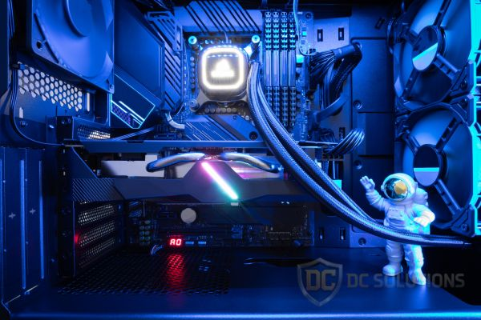

Dicas
Redes
Como melhorar o sinal do seu Wi-Fi em casa
Veja técnicas simples e eficazes para aumentar a qualidade do seu sinal Wi-Fi...
Manutenção
5 sinais de que seu computador precisa de manutenção
Barulhos estranhos, lentidão e superaquecimento são alguns indícios importantes...
Segurança
Cuidado com golpes no WhatsApp
Saiba como identificar e se proteger contra golpes e clonagem de contas no WhatsApp.

Energia
Como economizar energia no PC
Reduza sua conta de luz com configurações simples no Windows e uso consciente de periféricos.
Desempenho
Melhore a velocidade do seu navegador
Descubra como limpar cache, extensões pesadas e otimizar a navegação na internet.